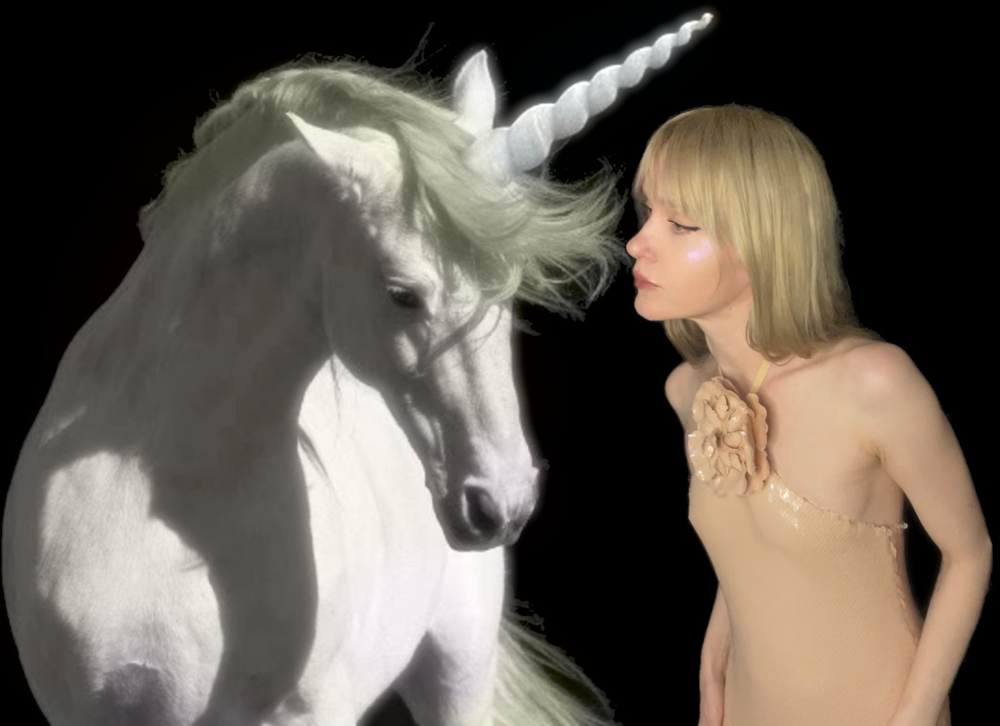
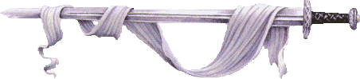
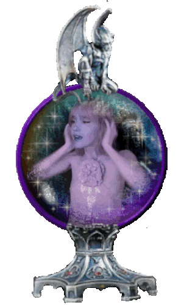
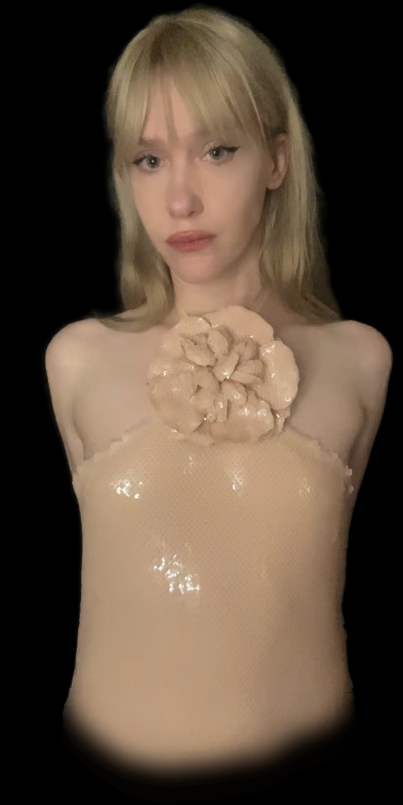
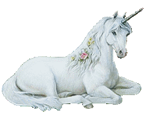
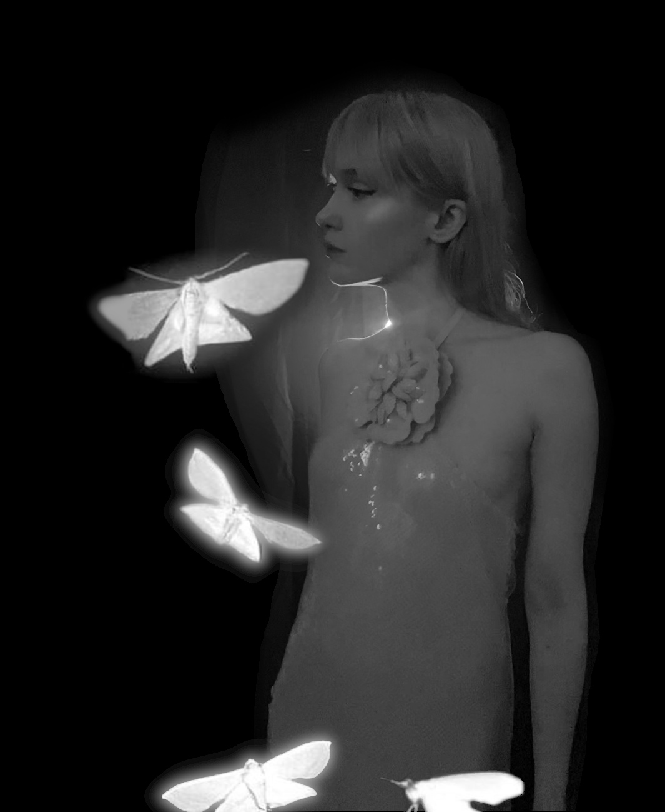

step out of the light
and into the darkness...

and into the darkness...

fireflies dance around, fading in and out like a heartbeat
a unicorn lifts its head from the brook from which it sips gracefully. it runs, silently, into the forest
as you walk through the forest, the moonvines bloom around you to welcome you to the Fantasy Realm.

the shadows of the trees tower around you, as still as castles against the moonlit sky
the beating of an owl's wings as it flies overhead


Catherine is still wearing Rodarte.

Catherine is still wearing Rodarte.
